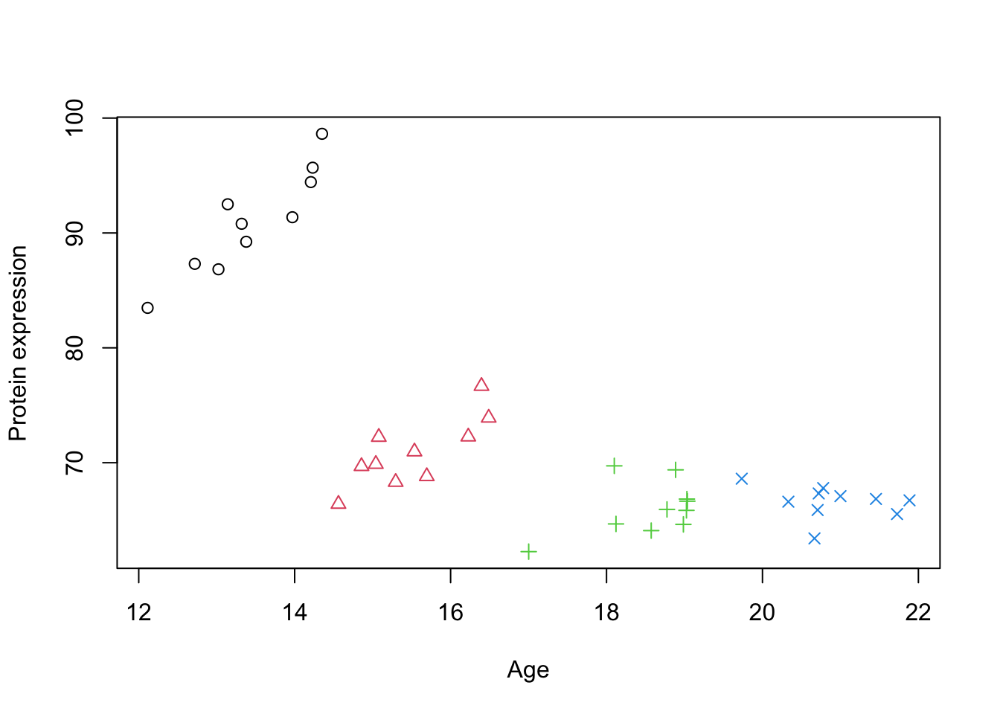
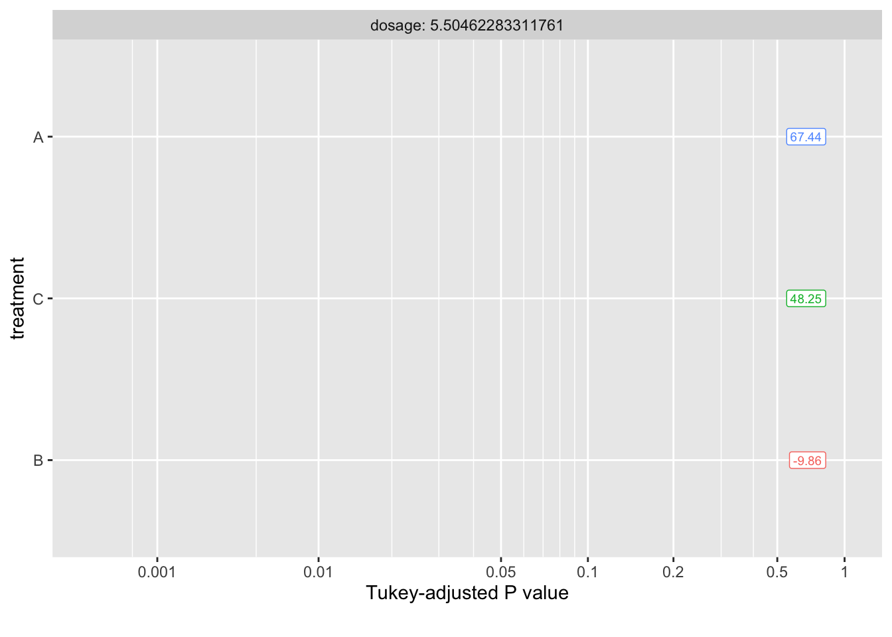

As briefly mentioned in the previous chapter, mixed-effects models (also known as multilevel or hierarchical models) are used introduce random effects to account for the cluster variations. This approach allows us to model the dependency structure due to clusters without having to estimate a separate parameter for each cluster effect. Mixed-effects models incorporate the clustering in the variance-covariance structure of the data, which provides a more parsimonious and interpretable model, especially when our primary interest lies in the fixed effects, such as the main effect of Age in the previous example.
Correlated is more common in biology than one might think. For example:
Repeated Measurements: Suppose you’re measuring a patient’s blood pressure over time. Measurements from the same patient will naturally be more similar to each other than those from different patients. A mixed-effects model handles this by modeling the variation between patients.
Nested Designs: Imagine studying the effectiveness of a new drug on mice housed within different cages. Mice within the same cage might be more alike due to shared environments. A mixed-effects model accounts for both variation between mice and variation between cages.
Longitudinal Studies: When tracking the growth of trees over time, measurements from the same tree will be more correlated than those from different trees. Here, a mixed-effects model can account for the individual tree’s growth patterns.
Multi-omics Studies: Omics data (genomics, transcriptomics, proteomics, etc.) from the same individual will show correlations due to underlying biological pathways. A mixed-effects model can tease apart the effects of different omic layers while accounting for their relationships within a person.
Family-based Disease Studies: Genetic variations and environmental exposures tend to cluster within families. Mixed-effects models can effectively model these familial factors when investigating how they contribute to disease risk.
Mixed-effects models are a powerful tool for analyzing complex biological datasets, offering improved accuracy and providing valuable insights into the sources of variability in disease studies.
Why “Mixed”?
Mixed models get their name because they combine two types of effects: fixed effects and random effects. This combination is what makes them so valuable for analyzing complex data.
Fixed Effects
The statistical models you might be familiar with, like linear regression or ANOVA, focus on “fixed effects.” These are the direct relationships between your chosen variables and the outcome you’re interested in. Fixed effects are the factors you control or are primarily interested in. If you’re studying the effect of age on protein expression, age is your fixed effect. A fixed effect will contain all possible levels of a factor in the experiment, measuring a few specific instances of interest. The key premise of the fixed-effect model is that there is one true effect size that is common to all the studies being analyzed. This model assumes that any observed variation among study results is solely due to sampling error within studies, and not due to actual differences in effect sizes across studies. Therefore, the goal of a fixed-effect analysis is to estimate this common true effect size.
Let’s think about a research question asking if a specific vitamin supplement reduces the duration of common cold symptoms. Multiple clinical trials have been conducted to evaluate the effect of this vitamin supplement on the duration of common cold symptoms. Each trial uses the same dosage of the supplement and has similar participant demographics (e.g., age, health status). The researchers conducting the analysis believe that, given the standardized intervention and population, the supplement should have a consistent effect across all trials.
Studies Reviewed: - Study 1: 100 participants, average reduction in symptom duration of 1.5 days. - Study 2: 150 participants, average reduction in symptom duration of 1.4 days. - Study 3: 120 participants, average reduction in symptom duration of 1.6 days. - Study 4: 130 participants, average reduction in symptom duration of 1.3 days.
Fixed-Effect Model Assumptions in this Example:
Single True Effect Size: The assumption here is that there is one true effect size reflecting the average reduction in the duration of common cold symptoms due to the vitamin supplement. This is based on the controlled administration of the supplement and the homogeneous nature of the participant groups across the trials.
Variation Due to Sampling Error: The slight differences in observed effects among the studies (e.g., some showing a 1.3-day reduction while others show a 1.6-day reduction) are attributed to sampling error—random variation due to the different samples of participants in each study.
Goal: To estimate the common true effect size of the vitamin supplement on reducing the duration of cold symptoms, a fixed-effect analysis is employed. This involves calculating a weighted average of the effect sizes from the individual trials, with greater weight given to larger trials since they are less prone to sampling error.
Through the fixed-effect model analysis, it might be concluded that the specific vitamin supplement leads to an average reduction of approximately 1.4 days in the duration of common cold symptoms. This conclusion is based on the premise that the variation in results across the trials is solely due to sampling error, without accounting for potential underlying differences in participant response to the supplement, as such variability is assumed to be negligible given the standardized conditions of the trials.
The primary limitation of using a fixed-effect model, lies in its underlying assumptions about the homogeneity of effect sizes across studies. This model assumes that there is one true effect size that applies to all studies, and any observed variability in outcomes is solely due to sampling error. However, this assumption can be overly simplistic and may not always hold true, especially in biological and medical research where variability is the norm rather than the exception.
Random effect
The random-effects offer a more flexible and realistic approach, especially in contexts where between-study variability is expected or observed. The defining feature of the random-effects model is the assumption that there is a distribution of true effect sizes across studies, and the goal is to estimate the mean of this distribution. This approach accounts for variation not only within studies (due to sampling error) but also between studies, recognizing that different studies may inherently have different true effect sizes due to various factors (e.g., differences in populations, interventions, outcomes measured).
Returning to our scenario of evaluating the impact of a vitamin supplement on the duration of common cold symptoms, let’s consider that the clinical trials are conducted across various geographical locations, each with a distinct demographic and environmental profile. These location-based groups could inherently influence how participants respond to the supplement, independent of the supplement’s effect itself. We would introduce random intercepts for each geographical location. This means that while we are still interested in estimating the overall effect of the vitamin supplement on symptom duration, we also acknowledge that each location starts from a different baseline in terms of average symptom duration without the supplement. However, we actually don’t directly estimate these baselines but rather assume that these baselines are randomly samples from a distribution of baselines in the population with certain statistical properties. Therefore, we are not interested in each single baseline but we want to know statistical properties of the distribution of baselines.
In summary, the fixed-effect model’s generalization is limited to the “levels” within the experiment, meaning it applies to populations or conditions that exactly match those of the included studies. It treats the effect as if it were a fixed property of the specific scenarios tested. In contrast, the random-effects model allows for generalization to “levels beyond those that took part in the study,” acknowledging that the effect sizes are part of a distribution across a wider population. This model treats the effect as a variable property reflecting a range of possible scenarios, including those not directly observed in the analysis.
This might sounds too complicated or abstract. We are going to clarify this with a few examples.
Ingredients
In this section, we will try to clarify what information do we need in order to fit a linear model.
Grouping Structure of the Data
The first and most important thing is to understand the data we are dealing with. Before we can make any attempt to use mixed models, we need to know what kind of grouping structure we want to capture. Mixed models are particularly useful when data is collected in groups or clusters, such as measurements from different subjects, schools, geographical locations, or time points within subjects. Identifying the hierarchy or nested structure where observations are grouped within higher-level units is crucial. This grouping structure can significantly influence the correlations among observations, as data points within the same group are likely to be more similar to each other than to data points in different groups. Understanding this structure allows us to correctly model the random effects, which account for the variability at different levels of the data hierarchy, thereby improving the accuracy and interpretability of our results. By incorporating these random effects, mixed models enable us to make inferences about both the fixed effects, which are consistent across groups, and the random effects, which vary across groups.
Without having this information, we cannot use standard mixed models. This grouping must be categorical, not continuous, as mixed models rely on categorical variables to define the levels of the hierarchy or nested structure within the data. Categorical grouping allows us to classify observations into distinct categories or groups that share common characteristics.
It is obvious but worth mentioning that these grouping should not be confused with random effects.Random effects are calculated based on the assumption that data points within the same group may share more similarities with each other than with data points from different categories, thus accounting for the within-group correlation. Therefore, the identification of categorical groupings is not just a step in the analysis but a prerequisite for accurately calculating and interpreting the random effects that are fundamental to the mixed model’s approach to data analysis.
Important
You cannot use continuous data as grouping if it does not have levels. Without these discrete levels, it becomes impossible to define the clusters or hierarchies necessary for calculating random effects. To effectively employ mixed models, one must either use inherently categorical variables or discretize continuous variables into meaningful categories.
Note
Sometimes it is not clear what grouping of data exist. Or even what should be used as grouping. In often (but not always), the grouping is something different than what we are interested in. For example, let’s say, we have gathered data from patients with a disease and attempted to find a matched control based on certain characteristics such as age, BMI etc. The group of interest here is disease vs. healthy and a possible grouping variable for random effect would be a match ID for the a each disease and its matched control.
The last thing i would like to mention is that, how many levels the random effect grouping should have in order to be included in the model. Although there is no golden consensus about it but most people tend to agree that the number levels of the group factor should be more than five to be accurately modeled by mixed models. Although some argue that with even two levels, mixed model will be like classical linear regression one should be extra cautious about it.
Design for fixed and random effects
Now that we have identified the grouping structure of the data, we need to decide what effects are fixed and what effects are random with respect to the grouping structure of the data. This is again might be confusing a bit but if we start asking ourselves a few questions, it might clarify the whole concept.
It is important to stress that the main reason we have chosen to go with mixed models is that we believe there is a grouping in our data that somehow affects some of the effects in our study. And by saying effect we mean the influence or impact that a particular variable has on the outcome of interest.
So here comes the first and a key question:
Do we believe a particular effect varies across the grouping structure of the data? if we do not believe that a particular effect varies across the grouping structure of the data, then we may consider modeling this effect as a fixed effect without taking care of the grouping structure.
If the answer to this question is yes. Then we ask ourselves another key question.
Are we interested in estimating the effect specific to the groups? Now that we have decided to take care of the grouping structure. We might be interested in estimating the effect of interest in each of groups or even compare them across the groups. You might want to even calculate p-values for these. If this is so then you might want to model these as fixed effect for example by including them as covariate (or blocking/control variable or even interaction) in the model. Doing so however, will force the model to estimate these effect thus spending degrees of freedom.
If however, we are still interested in taking care of the grouping but instead of estimating the effect in each group, we are happy just to know how much variability is in the effect of interest across the groups, then we are going to consider modeling that effect as random. This will instruct the modeling application to instead of estimating effects for each group (could be hundred of groups), just come up with estimates of few parameters showing the variability. Please note that these effects can be anything from baseline, slopes, interaction etc.
Do we have a large number of groups, and are some of these groups potentially unobserved? Random effects models are particularly useful when dealing with a large number of groups, especially when some groups in the population might not be represented in the sample. Random effects assume that the observed groups are a random sample from a larger population of groups, allowing for generalization beyond the specific groups in the study.
However, as said before, instead of estimating parameters for each group, then calculate variance across the groups. If the number of levels in each group is too few (like two or something like that), the estimated variance is not going to be accurate. So you might want to actually get back and consider using classical models.
By asking these questions, we can better clarify the roles of fixed and random effects. These things are going to be further clarified when we start working on a few examples.
Examples (Mixed models in R )
We get back our simulated data in the previous chapter and try to model it using mixed models. Before proceeding make sure that you have installed lme4 package as this is what we are going to use throughout this section.
Just to remind you, the idea was to examine the relationship between Age and Protein expression.
Code
simulate_grouped_trend <-function(group_count =5, points_per_group =10, global_slope =-10, global_intercept =30, group_slope =2, noise_sd =50,noise_sd2=2) {set.seed(123) # Setting a seed for reproducibility# Initialize an empty data frame to store the simulated data data <-data.frame(x =numeric(), y =numeric())# Loop to create each groupfor (i in1:group_count) { x_start <-12+ (i -1) * (10/ group_count) # Stagger the start of x for each group x <-runif(points_per_group, min = x_start, max = x_start + (10/ group_count))# Apply a local positive trend within the group, but maintain the global negative trend local_intercept <- global_intercept + global_slope * (x_start + (10/ (2* group_count))) +rnorm(1, mean =0, sd = noise_sd) y <- local_intercept + group_slope[i] * (x - x_start) +rnorm(points_per_group, mean =0, sd = noise_sd2)# Combine this group with the overall dataset group_data <-data.frame(x = x, y = y,group=i) data <-rbind(data, group_data) }return(data)}# generate simulated datadata_int <-simulate_grouped_trend(group_count =4,points_per_group =10,global_slope =-2,global_intercept =100,group_slope =c(6,4,2,1),noise_sd =5,noise_sd2=2)# set group to factordata_int$group <-factor(data_int$group)# plot the dataplot(data_int$x,data_int$y,xlab="Age",ylab="Protein expression",col=data_int$group,pch=as.numeric(data_int$group))

Figure 1: A scatter plot of Age vs. Protein expression
Because there are some grouping structure in data, we decide to take care of it. Let’s say that each group is a random clinic that we decided to get some sample from. So we now have identified the grouping structure in our data that might influence the effect of interest (Age).
What we believe is that the effect of Age on the protein expression is constant in each of the groups. However, due to either technical issues with the instruments or even demographics, each group might have different baselines (starting point) for the protein expression. This gives us a hint that we might have to model intercept differently for each group. This decision gives us two choices, model this intercept as fixed or random effect.
Me as a researcher tell you in addition to the effect of age, I would like to know how much differences exactly are between each of these clinics. Therefore i want to use fixed effect to exactly pinpoint the estimated baseline for each of the clinic and compare them against each other.
You however, argue that there is no reason to do that. We just picked a few random clinics, there is no point in knowing by how much clinic 1 is different to clinic 2 because we could have selected and other random clinics in the world. So let’s model this as random effect to get the variance of the intercepts across clinics. By modeling the intercept as a random effect, we acknowledge that each clinic has its own baseline level of protein expression due to various unmeasured factors such as technical differences in equipment or demographic variations. This approach allows us to account for the inherent variability between clinics without focusing on the specific differences between any two clinics. Instead, we aim to understand the general variability of baseline protein expression levels across clinics.
We start using the classical approach (as we saw in the previous chapter) using lm function with the following formula y ~ 1+x+group:
Note
We have included 1 in the model just to stress that there is an intercept in the model. Obviously, y ~ 1+x+group is identical to y ~ x+group
Code
# Fit a linear regression modelmodel_lm <-lm(y ~1+x+group, data = data_int)summary(model_lm)
Call:
lm(formula = y ~ 1 + x + group, data = data_int)
Residuals:
Min 1Q Median 3Q Max
-3.9184 -1.7771 -0.1619 1.3793 5.2085
Coefficients:
Estimate Std. Error t value Pr(>|t|)
(Intercept) 54.3746 8.0727 6.736 8.41e-08 ***
x 2.7260 0.5977 4.561 5.99e-05 ***
group2 -25.7602 1.6487 -15.625 < 2e-16 ***
group3 -38.9476 3.2411 -12.017 5.62e-14 ***
group4 -44.7675 4.5867 -9.760 1.59e-11 ***
---
Signif. codes: 0 '***' 0.001 '**' 0.01 '*' 0.05 '.' 0.1 ' ' 1
Residual standard error: 2.434 on 35 degrees of freedom
Multiple R-squared: 0.954, Adjusted R-squared: 0.9488
F-statistic: 181.6 on 4 and 35 DF, p-value: < 2.2e-16
This model has four different intercepts, one for each group and a single slope that is identical for each group.
Given this result, we have estimated the group coefficients and we can go ahead with comparing the groups or do whatever we wanted to do with these estimates. It is important that here we don’t have a global slope. We have four slopes, one for each group.
Now it is time to do the same analysis using the mixed model approach. The model that we are going fit using lmer function from lme4 is of form y ~ 1+x+(1|group). This part of the model, y ~ 1+x, we already know what it is. However, what this part (1|group) is new. The right part of | shows what variable we want to use as grouping factor by which we are going to fit our random effect (That is the group in our case). The left part of | is the effect we want to consider random. The left part is like a formula, similar to classical regression. which in this case, we just used 1. This means for our main model, y ~ 1+x which has an intercept (1) and a slope x, we would like to consider the intercept as random effect so we use 1.
Now that we know the structure of the model, let’s go ahead and do the modeling:
Code
library(lme4)# Fit a mixed linear regression modelmodel_lmm <-lmer(y ~1+x+(1|group), data = data_int)summary(model_lmm)
Linear mixed model fit by REML ['lmerMod']
Formula: y ~ 1 + x + (1 | group)
Data: data_int
REML criterion at convergence: 201.4
Scaled residuals:
Min 1Q Median 3Q Max
-1.68459 -0.76282 -0.09731 0.60068 2.18875
Random effects:
Groups Name Variance Std.Dev.
group (Intercept) 378.606 19.458
Residual 5.931 2.435
Number of obs: 40, groups: group, 4
Fixed effects:
Estimate Std. Error t value
(Intercept) 29.9105 14.0125 2.135
x 2.5561 0.5892 4.339
Correlation of Fixed Effects:
(Intr)
x -0.719
This output has some key differences to the previous approach. The first thing is in the fixed effect part:
Code
as.list(summary(model_lmm))[['coefficients']]
Estimate Std. Error t value
(Intercept) 29.910511 14.012502 2.134559
x 2.556149 0.589159 4.338640
Unlike lm, here there is no estimate for each group. There is a single intercept and a single slope. These are global trends in the data with their corresponding Std. Error and t value. But what happen with random effect and grouping of the data. This is what we can see in the Random effects part of the output:
Code
as.list(summary(model_lmm))[['varcor']]
Groups Name Std.Dev.
group (Intercept) 19.4578
Residual 2.4355
Depending of what type of random effect we have been fitting this table can have different headers. But generally, Groups, Name, Variance, Std.Dev. and Corr are part of it.
Each row of this table correspond to a source of variation in our data that is random because of a certain reason. In our model, we decided to consider only Intercept as a random effect for group. Therefore, the first row of the table tells us that there is random variability in Intercept between different group. This variability is quantified by a variance of 378.606 and a standard deviation of 19.458. This means that the average effect (or intercept) across groups can deviate from the overall (global) intercept by about 19.458 units, indicating substantial between-group variability. This is important to note that, we have actually never estimated any intercept for each group directly. But we have estimated the variability of intercepts across different groups, which allows us to account for the fact that each group may have a different starting point or baseline level in the response variable, even though these specific baseline levels are not directly calculated. You can think about this as the variance of the distribution of intercepts across the groups. Essentially, we’re modeling the distribution from which each group’s intercept is drawn.
The second row, labeled Residual, refers to the variability within each group that is not explained by the model predictors (because of random sampling). The variance here is 5.931, with a standard deviation of 2.435. This residual variance represents the individual differences or noise within groups after accounting for the modeled effects, including the random intercepts.
So before moving on let’s summarize what get got so far.
We used mixed models with a random intercept to model the effect of age on protein expression. We got an estimated global intercept (baseline) and slope (main effect of interest). We took care of the grouping structure of our data without directly estimating any additional parameters. In fact, what we estimated was intercept, slope, variance of Intercept and variance of residuals. One of the coolest thing here is that we would have estimated the exact same number of parameters if our grouping structure had a lot more levels. But if we want to use grouping as covariate (in a classic model), we should have modeled all of those levels!
Predicting the random intercept
Despite that we have not estimated the intercept for each of the group, we can still predict what would the intercept be for each of the groups. We are going to see in the math section how that can be done, but for now, we skip the details and directly use the function ranef from lme4 package.
Code
print(ranef(model_lmm))
$group
(Intercept)
1 26.705636
2 1.337016
3 -11.314930
4 -16.727722
with conditional variances for "group"
In this particular case, it gave us the differences from the overall intercept estimated in the mixed effects model. By extracting the random effects using the ranef function, we obtain the specific adjustments needed for each group. We can now use the global intercept and these adjustments to visualize the predicted intercept.
Code
# Plotting the initial scatter plot with points colored by group and shape determined by groupplot(data_int$x, data_int$y, xlab="Age", ylab="Protein expression",col=data_int$group, pch=as.numeric(data_int$group))# Looping through each unique group in the datasetfor (group inunique(data_int$group)) {# Subset data for the current group group_data <- data_int[data_int$group == group,]# Calculate the intercept for the group by adding the fixed intercept to the group's random effect intercept <-fixef(model_lmm)[1] +ranef(model_lmm)[[1]][group, 1]# Extract the fixed effect slope from the model slope <-fixef(model_lmm)[2]# Draw a line for the group using the calculated intercept and slopelines(y = intercept + slope * group_data$x, x = group_data$x, col ="red", lty =1)}# Draw a global effect line using the fixed effect intercept and slope from the modelabline(a =fixef(model_lmm)[1], b =fixef(model_lmm)[2], col ="blue")# Adding a legend to the plotlegend_labels <-c("Global Effect", "Random Intercept")legend("topright", legend = legend_labels, col =c("blue", "red"), lty =1)
Figure 2: Scatter plot of Age vs. Protein expression per group with random intercept
Here we have plotted best unbiased estimated trend per group and also the global trend. We can see that all the lines are parallel (as we still did not model slope per group) and there is a deviation of slope in each of the groups compared to the global trend.
Looking at Figure 2, we can see that a lot of variation is because of the differences between the groups. This is exactly what the variance component of the mixed model showed us. The ratio of random intercept and the total variance quantifies how much of the total variability in the outcome is due to variability between groups: \(\frac{378.606}{5.931+378.606}=98.46\%\). So most of the variation in the data is because of the differences between the groups.
Random slope
So far we have the random intercept model, however, one can argue that the effect of age on protein expression might not be uniform across all clinics. This variability suggests that we should also consider modeling the slope as a random effect, allowing the relationship between age and protein expression to vary among the groups. This leads us to a more complex but potentially more accurate model: y ~ 1+x+(1+x|group). In this model, not only the intercepts are allowed to vary randomly across clinics (1 part of the the model), but also the slopes (x). This basically says that each clinic might not only have a different starting point of protein expression but also a different rate at which protein expression changes with age.
Implementing a random slope model accommodates the hypothesis that the effect of age could be influenced by factors specific to each clinic, such as demographic characteristics, environmental factors, or other clinic-specific variables not captured in the dataset.
To fit this model, we modify our lmer function call as follows:
Code
# Fit a mixed linear regression model with random slopesmodel_lmm_rs <-lmer(y ~1+x+(1+x|group), data = data_int)summary(model_lmm_rs)
Linear mixed model fit by REML ['lmerMod']
Formula: y ~ 1 + x + (1 + x | group)
Data: data_int
REML criterion at convergence: 186.8
Scaled residuals:
Min 1Q Median 3Q Max
-1.56057 -0.74656 -0.02922 0.26277 2.22754
Random effects:
Groups Name Variance Std.Dev. Corr
group (Intercept) 344.655 18.565
x 5.141 2.267 -0.93
Residual 3.672 1.916
Number of obs: 40, groups: group, 4
Fixed effects:
Estimate Std. Error t value
(Intercept) 35.321 11.977 2.949
x 2.538 1.220 2.080
Correlation of Fixed Effects:
(Intr)
x -0.904
In the output, we see not just the variance and standard deviation for the intercepts across groups, but also for the slopes. This allows us to quantify how much variation there is in the relationship between age and protein expression across the different clinics.
Looking at fixed effect, we still have the global intercept and slope. There is a small change compared to the previous model but the major change now is in the random effect part.
The Random effects section of the model summary now includes information about the variability in slopes in addition to the intercepts.
Code
print(VarCorr(model_lmm_rs))
Groups Name Std.Dev. Corr
group (Intercept) 18.5649
x 2.2675 -0.933
Residual 1.9164
We still have the major source of variation in our data caused by Intercept and a smaller, but still present, variability in how age affects protein expression across these clinics (the slope x).
A high correlation between the intercept and slope within the random effects suggests a linear relationship in the random part of the model. This indicates that clinics with higher baseline protein expression also have a stronger positive relationship between age and protein expression.
Code
# Plotting the initial scatter plot with points colored by group and shape determined by groupplot(data_int$x, data_int$y, xlab="Age", ylab="Protein expression",col=data_int$group, pch=as.numeric(data_int$group))# Looping through each unique group in the datasetfor (group inunique(data_int$group)) {# Subset data for the current group group_data <- data_int[data_int$group == group,]# Calculate the intercept for the group by adding the fixed intercept to the group's random effect intercept <-fixef(model_lmm_rs)[1] +ranef(model_lmm_rs)[[1]][group, 1]# Extract the fixed effect slope from the model slope <-fixef(model_lmm_rs)[2]+ranef(model_lmm_rs)[[1]][group, 2]# Draw a line for the group using the calculated intercept and slopelines(y = intercept + slope * group_data$x, x = group_data$x, col ="green", lty =1) intercept <-fixef(model_lmm)[1] +ranef(model_lmm)[[1]][group, 1]# Extract the fixed effect slope from the model slope <-fixef(model_lmm)[2]lines(y = intercept + slope * group_data$x, x = group_data$x, col ="red", lty =1)}# Draw a global effect line using the fixed effect intercept and slope from the modelabline(a =fixef(model_lmm_rs)[1], b =fixef(model_lmm_rs)[2], col ="blue")# Adding a legend to the plotlegend_labels <-c("Global Effect", "Random Intercept", "Random Intercep and slope")legend("topright", legend = legend_labels, col =c("blue", "red","green"), lty =1)
Figure 3: Scatter plot of Age vs. Protein expression per group with random intercept and slope
The plot above illustrates the variability in protein expression as a function of age across different clinics. The blue line indicates the overall trend across all clinics (Global Effect), while the red and green lines represent individual clinic trends. The red lines show the clinic-specific adjustments to the overall intercept (Random Intercept), indicating that some clinics, on average, have higher or lower protein expression regardless of age. The green lines show both clinic-specific intercepts and slopes (Random Intercept and Slope), suggesting that the rate at which protein expression changes with age also varies by clinic. This visual representation underscores the importance of accounting for random effects in the model, as it captures the ways in which age influences protein expression across diverse clinical settings.
In this specific case, the global estimated intercept and slope did not change that much compared to the random intercept model. However, in the cases that there is a very large deviation between slopes of different groups, the global coefficient can be much more impacted.
Nested and crossed designs
So far we have seen pretty simple cases of two level models. However, mixed models can be used to handle pretty complex experimental designs. Here i will try to give you a few examples of what you can do with these models and how to interpret them.
Important
We are going to repeat this later but the type of design is not something that should be inferred based on the data. Despite that this is possible and might seem reasonable to do so, especially nested and crossed designs musted supported by the experimental designs
Nested designs
Nested designs occur when one level of grouping is entirely contained within another level, without any overlap between groups at the same level. In the context of mixed models, this translates to data where, for instance, patients are grouped within clinics, and clinics are grouped within regions Each patient belongs to one and only one clinic, and each clinic belongs to one and only one region. The key characteristic of nested designs is that the groups at one level do not intersect or overlap with groups at another level.
graph TD
A[Region 1]
A --> B[Clinic 1]
A --> C[Clinic 2]
A --> D[Clinic 3]
B -.-> M1[Patient 1]
B -.-> N2[Patient 2]
B -.-> O3[Patient 3]
C -.-> P4[Patient 4]
C -.-> Q5[Patient 5]
C -.-> R6[Patient 6]
D -.-> S7[Patient 7]
D -.-> T8[Patient 8]
D -.-> U9[Patient 9]
E[Region 2]
E --> F[Clinic 4]
E --> G[Clinic 5]
E --> H[Clinic 6]
F -.-> V10[Patient 10]
F -.-> W11[Patient 11]
F -.-> X12[Patient 12]
G -.-> Y13[Patient 13]
G -.-> Z14[Patient 14]
G -.-> A15[Patient 15]
H -.-> B16[Patient 16]
H -.-> C17[Patient 17]
H -.-> D18[Patient 18]
I[Region 3]
I --> J[Clinic 7]
I --> K[Clinic 8]
I --> L[Clinic 9]
J -.-> E19[Patient 19]
J -.-> F20[Patient 20]
J -.-> G21[Patient 21]
K -.-> H22[Patient 22]
K -.-> I23[Patient 23]
K -.-> J24[Patient 24]
L -.-> K25[Patient 25]
L -.-> L26[Patient 26]
L -.-> M27[Patient 27]
classDef region fill:#f9f,stroke:#333,stroke-width:2px;
classDef clinic fill:#ccf,stroke:#333,stroke-width:2px;
classDef patient fill:#cff,stroke:#333,stroke-width:1px;
class A,E,I region;
class B,C,D,F,G,H,J,K,L clinic;
class M1,N2,O3,P4,Q5,R6,S7,T8,U9,V10,W11,X12,Y13,Z14,A15,B16,C17,D18,E19,F20,G21,H22,I23,J24,K25,L26,M27 patient;
Interpreting Nested Designs
In nested designs, the analysis aims to account for the variability at each level of the hierarchy. For example, when assessing the effect of age on protein expression, a nested model allows for the separation of the variability attributable to differences between regions, differences between clinics within regions, and individual differences between patients within clinic. This separation is crucial for accurately estimating the effects of interest (e.g., age) while controlling for the hierarchical structure of the data.
Nested models are particularly powerful for:
Identifying Variability: They help in identifying where the most significant sources of variability lie within the hierarchical structure. Is it between regions, between clinics within regions, or within regions?
Improving Estimates: By correctly modeling the nested structure, we obtain more accurate estimates of group-level effects and individual effects. This is because the model accounts for the correlation within groups, leading to better estimates of the standard errors for the fixed effects.
Customizing Interventions: In life science research, for example, understanding the level at which interventions are most effective (regions vs. clinics) can inform targeted strategies for improvement.
Example
In R (lmer), we can use (1 | regions/clinics) for samples nested within clinic, which are in turn nested within regions.
Let’s see one example:
Code
simulate_grouped_trend_nested <-function(region_count =3, clinics_per_region =5, measurements_per_clinic =10,global_slope =-10, global_intercept =30, region_effects =c(), region_slopes =c(),clinic_effects =list(), clinic_slopes =list()) {set.seed(123) # Setting a seed for reproducibility# Initialize an empty data frame to store the simulated data data <-data.frame(x =numeric(), y =numeric(), clinic =integer(), region =integer()) clinic_id_counter =1# Initialize a counter for clinic IDs across regions# Loop to create data for each regionfor (region in1:region_count) {# Use the specific region effect and slope region_effect_adj = region_effects[region] region_slope_adj = region_slopes[region]# Loop to create data for each clinic within a regionfor (clinic in1:clinics_per_region) { x_start =runif(1, min =0, max =10) +10* (clinic -1) # More continuous x values across clinics x =runif(measurements_per_clinic, min = x_start, max = x_start +10) # Continuous x for measurements# Use the specific clinic effect and slope clinic_effect = clinic_effects[[region]][clinic] clinic_slope = clinic_slopes[[region]][clinic]# Simulate measurements for each clinicfor (i in1:measurements_per_clinic) {# Model y incorporating both global and specific slopes and effects y = (global_intercept + region_effect_adj + clinic_effect) + (global_slope + region_slope_adj + clinic_slope) * x[i] +rnorm(1, mean =0, sd =1) # Assuming measurement_noise_sd is constant for simplicity# Combine this measurement with the overall dataset data =rbind(data, data.frame(x = x[i], y = y, clinic = clinic_id_counter, region = region)) } clinic_id_counter <- clinic_id_counter +1# Increment clinic ID for unique identification across regions } }return(data)}set.seed(10)data_int_nested<-simulate_grouped_trend_nested(region_count =4,clinics_per_region =3,measurements_per_clinic =20,global_slope =0,global_intercept =100,region_effects =rnorm(4,mean =0,sd =20),region_slopes=rnorm(4,mean =0.1,sd =2),clinic_effects =lapply(1:4,function(i){rnorm(3,mean =0,sd =10)}),clinic_slopes =lapply(1:4,function(i){rnorm(3,mean =0.1,sd =1)}))plot(data_int_nested$x,data_int_nested$y,col=data_int_nested$region,pch=data_int_nested$clinic,xlab ="Age",ylab ="Protein expression")legend("top", legend =paste("Region", unique(data_int_nested$region)),fill =unique(data_int_nested$region), cex =0.8, title ="Regions",horiz=T)legend("topleft", legend =paste("Clinic", unique(data_int_nested$clinic)),pch =unique(data_int_nested$clinic), col ="black", cex =0.8, title ="Clinics", inset =c(0.05, 0))
Figure 4: Scatter plot of Age vs. Protein expression for nested design
In this example, we simulated a number of samples from a few clinics from different regions. From the beginning the experimental design was nested in a way that, a single sample was from a single clinic and a single clinc was from one and only one region. Looking at Figure 4, we can already see that there is a very big baseline difference between regions. Within each region, there is also some baseline differences between clinics but it is less dominant than the region differences. Furthermore, the effect of Age on Protein expression seems to be different slightly across different regions (some have positive effect, some negative and some close to zero) and to a lesser extend within each region but across clinics. Given this informal interpretation of the data we go forward and do the modeling considering both the intercept and slope as random effects.
Linear mixed model fit by REML ['lmerMod']
Formula: y ~ x + (x | region/clinic)
Data: data_int_nested
REML criterion at convergence: 859.4597
Random effects:
Groups Name Std.Dev. Corr
clinic:region (Intercept) 8.124
x 1.104 -0.31
region (Intercept) 19.610
x 2.572 -0.25
Residual 1.042
Number of obs: 240, groups: clinic:region, 12; region, 4
Fixed Effects:
(Intercept) x
100.915 0.337
This result is slightly different to what we have seen before using only a single grouping factor. Now we have clinic within region (clinic:region) in which the model estimates random intercepts and slopes for clinics nested within regions. This reflects the variability in baseline Protein expression and the effect of Age on Protein expression at the clinic level, indicating that clinics within the same region may still exhibit unique characteristics. The model also estimates random intercepts and slopes at the region level, capturing broader variations across regions. This indicates how different regions can have distinct baseline Protein expressions and different relationships between Age and Protein expression.
The model identifies significant variability in baseline Protein expression levels across regions, as indicated by the standard deviation of the intercepts for regions. This variability signifies that different regions start off with different baseline Protein expressions. There’s additional variability at the clinic level within each region, though this effect is smaller compared to the variability between regions.
The slopes, representing the effect of Age on Protein expression, also vary by region and by clinic within regions. This variation in slopes indicates that the relationship between Age and Protein expression is not uniform; it changes from one region to another and even among clinics within the same region. Some regions or clinics might show a positive relationship (increasing Age associated with higher Protein expression), while others show a negative or negligible relationship.
Similar to what we have seen before, the model provides a correlation coefficient between the intercept and slope within clinics nested in regions. A negative correlation suggests that clinics with higher baseline Protein expression tend to have a less steep (or more negative) Age effect, or vice versa.
Finally, the fixed effect intercept represents the average baseline level of Protein expression when Age is zero, pooled across all regions and clinics. This gives a general starting point for Protein expression across the dataset. And the fixed effect slope indicates the average effect of Age on Protein expression, again pooled across the entire dataset. This effect sizes up the general tendency of how Protein expression changes with Age, irrespective of the region or clinic.
Crossed designs
The last experimental design I want to mention is the full crossed design, which contrasts with the nested structure we’ve explored so far. In a crossed design, each level of one grouping factor can be combined with each level of another grouping factor, creating a matrix-like structure of group combinations. This design is particularly relevant in experiments where the interaction effects between two or more independent grouping factors are of interest, and these factors are not hierarchically related but rather orthogonal or independent of each other.
graph TD
A[Clinic 1]
E[Clinic 2]
I[Clinic 3]
B[Doctor 1]
C[Doctor 2]
D[Doctor 3]
M1[Sample 1]
M2[Sample 2]
M3[Sample 3]
M4[Sample 4]
M5[Sample 5]
A -.-> B
A -.-> C
A -.-> D
E -.-> B
E -.-> C
E -.-> D
I -.-> B
I -.-> C
I -.-> D
%% Patients connected to clinics to show they can come from any clinic, implying crossed with regions
B --> M1
B --> M2
B --> M3
B --> M4
B --> M5
C --> M1
C --> M2
C --> M3
C --> M4
C --> M5
D --> M1
D --> M2
D --> M3
D --> M4
D --> M5
%% Additional patient connections omitted for brevity
classDef region fill:#f9f,stroke:#333,stroke-width:2px;
classDef clinic fill:#ccf,stroke:#333,stroke-width:2px;
classDef patient fill:#cff,stroke:#333,stroke-width:1px;
class A,E,I region;
class B,C,D,F,G,H,J,K,L clinic;
class M1,M2,M3,M4,M5 patient;
One hypothetical study (probably very rare!) is a study designed to explore the effects of age on protein expression within a single patient, our research employs a unique crossed design where the patient visits multiple doctors across various clinics at different ages. Recognizing the potential for variability introduced by the differing methodologies and environments inherent to each clinic, as well as the distinct clinical approaches of each doctor. Specifically, we want to analyze the data, treating age as a continuous fixed effect to investigate its influence on protein expression. Concurrently, we model doctors and clinics as random effects to account for the variability they introduce into the protein expression measurements. This allows us not only to assess the general trend of protein expression changes over time but also to explore how these changes might be modulated differently across the various clinical settings and by different medical professionals.
Code
simulate_grouped_trend_crossed <-function(clinic_count =3, doctor_count =5, measurements_per_combination =10,global_slope =-10, global_intercept =30,clinic_effects =c(), clinic_slopes =c(),doctor_effects =c(), doctor_slopes =c()) {set.seed(123) # Setting a seed for reproducibility# Initialize an empty data frame to store the simulated data data <-data.frame(x =numeric(), y =numeric(), doctor =integer(), clinic =integer())# Validate or adjust lengths of effects and slopes arrays to match countsif (length(clinic_effects) != clinic_count) clinic_effects <-rep(clinic_effects[1], clinic_count)if (length(clinic_slopes) != clinic_count) clinic_slopes <-rep(clinic_slopes[1], clinic_count)if (length(doctor_effects) != doctor_count) doctor_effects <-rep(doctor_effects[1], doctor_count)if (length(doctor_slopes) != doctor_count) doctor_slopes <-rep(doctor_slopes[1], doctor_count)# Loop to create data for each combination of clinic and doctorfor (clinic in1:clinic_count) {for (doctor in1:doctor_count) { x_start =runif(1, min =0, max =10) # Continuous x values x =runif(measurements_per_combination, min = x_start, max = x_start +10) # Continuous x for measurements# Use the specific effect and slope for the current clinic and doctor clinic_effect_adj = clinic_effects[clinic] clinic_slope_adj = clinic_slopes[clinic] doctor_effect = doctor_effects[doctor] doctor_slope = doctor_slopes[doctor]# Simulate measurements for each combination of clinic and doctorfor (i in1:measurements_per_combination) {# Model y incorporating both global and specific slopes and effects y = (global_intercept + clinic_effect_adj + doctor_effect) + (global_slope + clinic_slope_adj + doctor_slope) * x[i] +rnorm(1, mean =0, sd =1) # Assuming measurement_noise_sd is constant for simplicity# Combine this measurement with the overall dataset data =rbind(data, data.frame(x = x[i], y = y, doctor = doctor, clinic = clinic)) } } }return(data)}data_int_crossed<-simulate_grouped_trend_crossed(clinic_count =4,doctor_count =3,measurements_per_combination =20,global_slope =1,global_intercept =100,clinic_effects =c(1,20,40,60),clinic_slopes=c(1,1.5,0.9,1.1),doctor_effects =c(1.3,1.2,2),doctor_slopes =c(-3,1,2))plot(data_int_crossed$x,data_int_crossed$y,col=data_int_crossed$clinic,pch=data_int_crossed$doctor,xlab ="Age",ylab ="Protein expression")legend("top", legend =paste("Clinic", unique(data_int_crossed$clinic)),fill =unique(data_int_crossed$clinic), cex =0.8, title ="Clinics",horiz=T)legend("topleft", legend =paste("Doctor", unique(data_int_crossed$doctor)),pch =unique(data_int_crossed$doctor), col ="black", cex =0.8, title ="Doctors", inset =c(0.05, 0))
Figure 5: Scatter plot of Age vs. Protein expression for crossed design
Ok! Now it is a bit more complicated that before. What Figure 5 tells us is that There appears to be quite a big differences in baseline between different clinics (colors). The effect of age on protein expression seems to be consistently go up in each clinic. However, looking at the doctors (shapes), we see that all three of them are quite consistent when it comes to baseline but one of them has a big slope differences compare to the other two.
Basically, the results of modeling tells us the same thing:
Linear mixed model fit by REML ['lmerMod']
Formula: y ~ x + (x | clinic) + (x | doctor)
Data: data_int_crossed
REML criterion at convergence: 732.3083
Random effects:
Groups Name Std.Dev. Corr
clinic (Intercept) 25.5179
x 0.2434 -0.17
doctor (Intercept) 0.4460
x 2.6332 0.82
Residual 0.9559
Number of obs: 240, groups: clinic, 4; doctor, 3
Fixed Effects:
(Intercept) x
131.832 2.108
The interpretation is the same as before, we have three kind of variations in both slopes and intercept. Between doctors, between clinics and of course the residuals. The largest variance is between the clinics in their baseline followed by the slope of doctors.
That of more or less what the crossed design looks like. It is important to note that, you should not model the crossed designs using the nested formula. Using a nested random effects notation like (x | clinic:doctor) implies a nested structure where each “doctor” is considered to be unique within each “clinic” and does not account for the possibility of the same doctor working across multiple clinics. This notation inherently assumes that each doctor-clinic combination is distinct and treats “doctor” identities as separate within each clinic, without recognizing that a single doctor could contribute data across different clinics. Modeling crossed factors using nested notation can inadvertently obscure the independence of those factors and the data’s true structure. As a result, it introduces structural biases in the analysis, potentially leading to incorrect conclusions about the effects of interest and the variability within and across the groups.
So to summarize, the crossed design does not assume any particular relationship between region and clinic. They are just two separate sources of random variability. This could be appropriate in a design where doctors from the same clinic could be more similar to each other, but a doctor could theoretically belong to any clinic.
The nested design assumes that doctors are nested within clinics. This introduces additional structure to the random effects, where the variability at the doctor level is specific to each clinic. This model is used in designs, where the data from doctors are grouped by clinics, and you expect that doctors within the same clinic share some commonality that is different from doctors in other clinics.
Note
One way to make sure that you are using the correct formulation of the random effect is to ask yourself whether this is design is nested or not. If the design is not nested you should use the crossed formulation.
For example for smaller designs we can check using xtabs
We can see that in the first example, each lower level grouping factor (in this case clinic) is only associated to one and only one region. But a region can accommodate multiple clinics. This is nested. However, in the second example, we have each doctor (lower level) associated with multiple clinics. This violates the assumptions of nesting and therefore is crossed.
There exist much more complex designs, but we are not going to cover them here.
Understand what you are doing!
Statistical models can become very complex especially when many variables of different types (countinous, categorical etc) are of interest or one is to look at interactions. What we want to do here in this section is to explore a few cases that involve creating models of more than one variable.
Consider a simple scenario where some patients have been given three treatments by different doctors.
Code
simulatePatientData_treatment_doctor <-function(numDoctors =30, numPatients =10, seed =12345) {set.seed(seed)# Parameters intercept =50# Baseline recovery time treatmentEffect =c(A =0, B =-50, C =-20) # Treatment effect on recovery time# Simulate data doctors <-rep(1:numDoctors, each = numPatients) treatment <-sample(c("A", "B", "C"), size = numDoctors * numPatients, replace =TRUE)# Random effects for doctors doctorIntercept <-rnorm(numDoctors, 0, 2) # Variation in doctor baseline recovery times doctorTreatmentBEffect <-rnorm(numDoctors, 0, 2) # Variation in treatment B effect by doctor doctorTreatmentCEffect <-rnorm(numDoctors, 0, 2) # Variation in treatment C effect by doctor# Calculate recovery time doctor_var<-list(c(1,1.4,0),c(1.2,1,0),c(0.9,1.3,20)) tr<-treatmentEffect[treatment]for(i inunique(doctors)) { tr[treatment=="A"& doctors==i]<-tr[treatment=="A"&doctors==i]+doctor_var[[i]][1] tr[treatment=="B"& doctors==i]<-tr[treatment=="B"&doctors==i]+doctor_var[[i]][2] tr[treatment=="C"& doctors==i]<-tr[treatment=="C"&doctors==i]+doctor_var[[i]][3] } recoveryTime <- intercept+tr +#(treatment == "B") * doctorTreatmentBEffect[doctors] + #(treatment == "C") * doctorTreatmentCEffect[doctors] + doctorIntercept[doctors] +rnorm(numDoctors * numPatients, 0, 2) # Add some observation noise data <-data.frame(doctor = doctors, treatment = treatment, recoveryTime = recoveryTime)return(data)}data_int_treatment <-simulatePatientData_treatment_doctor(numDoctors =3,numPatients =200)data_int_treatment$treatment <-factor(data_int_treatment$treatment)plot(data_int_treatment$recoveryTime ~jitter(as.numeric(data_int_treatment$treatment), 1), col=as.factor(data_int_treatment$treatment),pch=as.numeric(as.factor(data_int_treatment$doctor)),xaxt="n",xlab="Treatment",ylab ="Recovery Time")axis(1, at=c(1,2,3), labels=c("A","B","C"))legend("top", legend =paste("Doctor", unique(data_int_treatment$doctor)),pch =unique(data_int_treatment$doctor), cex =0.8, title ="Doctor",horiz=T)
Figure 6: Scatter plot of treatment vs recovery time
In this example, we have three treatments each given by three different doctors. What we are interested in is the treatment effect. However, what we believe is that patients going to different doctors might experience slightly different outcomes not just because of the treatment itself but also due to the specific practices or approaches of each doctor. Therefore, to accurately assess the treatment effect, we need to account for the variability introduced by the doctors. We decide to use random intercept model lmer(recoveryTime~treatment+(1|doctor),data_int_treatment).
Linear mixed model fit by REML ['lmerMod']
Formula: recoveryTime ~ treatment + (1 | doctor)
Data: data_int_treatment
REML criterion at convergence: 3586.159
Random effects:
Groups Name Std.Dev.
doctor (Intercept) 2.298
Residual 4.782
Number of obs: 600, groups: doctor, 3
Fixed Effects:
(Intercept) treatmentB treatmentC
50.75 -49.81 -14.33
In the linear mixed model we’ve fitted, it’s essential to note that due to the categorical nature of the treatment variable, there is no “slope” for the treatment variable in the conventional sense. Instead, the model estimates the differences in the intercept (mean recovery time) for treatments B and C relative to treatment A which is the same as the slope of the regression line in this case. Therefore, In the model, treatment effects are represented as shifts from the baseline (treatment A) rather than as distinct slopes or lines. If we look at the estimated fixed effects, we see that we have an intercept and two more coefficients for treatment B and treatment C. The intercept represents the expected recovery time for treatment A, and the coefficients for treatmentB and treatmentC represent the deviation in recovery time from treatment A.
Let’s plot these effects first before interpreting the random effects:
Figure 7: Scatter plot of treatment vs recovery time (fixed effects)
Given such a fit, what do you think the random intercept model actually does?
The answer to this question is actually quite simple. What we asked lmer to do, was to assume that the Intercept is the random effect. In this particular example the intercept is the baseline level of the treatment A. Therefore, the random intercept captures variability at the doctor level around the baseline effect of treatment A:
Despite that we saw that there is three lines (three intercepts) in this model, only the first one is assume to be random. The coefficients for treatments B and C are relative to this random baseline and have not been allowed to change depending on the doctor. This model is sufficient if we assume that the effect of the treatments is consistent across all doctors, meaning that the difference in recovery times between treatments does not vary from one doctor to another. Essentially, it assumes that each treatment’s effectiveness is uniform regardless of who administers it.
Let’s plot these effects before proceeding:
Code
doctor_effects <-cbind(doctor=c(1:3),coef(model_lmm_treatment)$doctor)colnames(doctor_effects)[2]<-c("intercept")# Calculate adjusted means for treatments B and Cdoctor_effects$treatmentB_effect = doctor_effects$intercept + doctor_effects$treatmentBdoctor_effects$treatmentC_effect = doctor_effects$intercept + doctor_effects$treatmentC# Plotplot(NULL, xlim=c(1, 3), ylim=range(c(doctor_effects$intercept, doctor_effects$treatmentB_effect, doctor_effects$treatmentC_effect)), xlab="Doctor", ylab="Recovery Time", main="Effect of Doctor and Treatment on Recovery Time",xaxt="n")axis(1, at=c(1,2,3), labels=c("1","2","3"))points(doctor_effects$doctor, doctor_effects$intercept, pch=19, col="blue") # Baseline (A)points(doctor_effects$doctor, doctor_effects$treatmentB_effect, pch=19, col="red") # Treatment Bpoints(doctor_effects$doctor, doctor_effects$treatmentC_effect, pch=19, col="green") # Treatment C# Connect points with lines to show the constant effect across doctorslines(doctor_effects$doctor, doctor_effects$intercept, col="blue", lty=2)lines(doctor_effects$doctor, doctor_effects$treatmentB_effect, col="red", lty=2)lines(doctor_effects$doctor, doctor_effects$treatmentC_effect, col="green", lty=2)legend("right", legend=c("Baseline (A)", "Treatment B", "Treatment C"), col=c("blue", "red", "green"), pch=19, lty=2)
Figure 8: Scatter plot of treatment vs recovery time (random intercept)
What this plot tells us is that, each doctor might have certain way of treating patient which affect the overall recovery time. However, what we assume is that the treatment specific effects are constant across the doctors. That means that no matter which doctor a patient go to, there is a constant shift in recovery time when the patient switch between the treatments. But what if some doctors are much more skilled that others to administrate a certain type of treatments? The previous model does not allow for the examination of how the effect of each treatment might vary by doctor, as it assumes a fixed effect of treatments across all doctors.
We have to specifically clarify for lmer which effects we want to be random. In this case, we are going to use the treatment effect as random and check what would happen
Warning in checkConv(attr(opt, "derivs"), opt$par, ctrl = control$checkConv, :
Model failed to converge with max|grad| = 0.00275838 (tol = 0.002, component 1)
Code
print(model_lmm_treatment_rnd)
Linear mixed model fit by REML ['lmerMod']
Formula: recoveryTime ~ treatment + (1 + treatment | doctor)
Data: data_int_treatment
REML criterion at convergence: 2545.443
Random effects:
Groups Name Std.Dev. Corr
doctor (Intercept) 3.4988
treatmentB 0.4936 -0.84
treatmentC 11.2470 -0.80 0.34
Residual 1.9710
Number of obs: 600, groups: doctor, 3
Fixed Effects:
(Intercept) treatmentB treatmentC
50.89 -50.02 -14.27
optimizer (nloptwrap) convergence code: 0 (OK) ; 0 optimizer warnings; 1 lme4 warnings
If we look at the random effect part of the model, it is now more clear that There is not only a big difference between the doctors when it comes to treatment A but also an even larger difference in treatment C.
Code
doctor_effects <-cbind(doctor=c(1:3),coef(model_lmm_treatment_rnd)$doctor)colnames(doctor_effects)[2]<-c("intercept")# Calculate adjusted means for treatments B and Cdoctor_effects$treatmentB_effect = doctor_effects$intercept + doctor_effects$treatmentBdoctor_effects$treatmentC_effect = doctor_effects$intercept + doctor_effects$treatmentC# Plotplot(NULL, xlim=c(1, 3), ylim=range(c(doctor_effects$intercept, doctor_effects$treatmentB_effect, doctor_effects$treatmentC_effect)), xlab="Doctor", ylab="Recovery Time", main="Effect of Doctor and Treatment on Recovery Time",xaxt="n")axis(1, at=c(1,2,3), labels=c("1","2","3"))points(doctor_effects$doctor, doctor_effects$intercept, pch=19, col="blue") # Baseline (A)points(doctor_effects$doctor, doctor_effects$treatmentB_effect, pch=19, col="red") # Treatment Bpoints(doctor_effects$doctor, doctor_effects$treatmentC_effect, pch=19, col="green") # Treatment C# Connect points with lines to show the constant effect across doctorslines(doctor_effects$doctor, doctor_effects$intercept, col="blue", lty=2)lines(doctor_effects$doctor, doctor_effects$treatmentB_effect, col="red", lty=2)lines(doctor_effects$doctor, doctor_effects$treatmentC_effect, col="green", lty=2)legend("right", legend=c("Baseline (A)", "Treatment B", "Treatment C"), col=c("blue", "red", "green"), pch=19, lty=2)
Figure 9: Scatter plot of treatment vs recovery time (random intercept and deviation)
So despite that there is no slope for continuous variable in a traditional sense, we can still model the variations in the deviations from the baseline. This model structure is particularly useful for highlighting the overall effectiveness of each treatment while controlling for variability in outcomes attributed to individual doctor differences.
We can now explore a bit more complex model that involves the interaction.
Models with interaction
In this example, our aim is to explore how the effectiveness of various treatments may vary with changes in dosage, and whether these effects are consistent across different doctors.
Code
simulatePatientData <-function(numDoctors =30, numPatients =10,doctor_dosage,doctor_var, seed =12345) {set.seed(seed)# Parameters intercept =50# Baseline recovery time treatmentEffect =c(A =0, B =-50, C =-20) # Treatment effect on recovery time dosageEffect =c(A =3, B =-2, C =1) # Effect of dosage on recovery time# Simulate data doctors <-rep(1:numDoctors, each = numPatients) treatment <-sample(c("A", "B", "C"), size = numDoctors * numPatients, replace =TRUE) dosage <-runif(numDoctors * numPatients, min =1, max =10) # Dosage levels between 1 and 10 dosageEffect<-rep(dosageEffect,each=numPatients)# Random effects for doctors doctorIntercept <-rnorm(numDoctors, 0, 2) # Variation in doctor baseline recovery times# Calculate recovery time tr<-treatmentEffect[treatment]for(i inunique(doctors)) { tr[treatment=="A"& doctors==i]<-tr[treatment=="A"&doctors==i]+doctor_var[[i]][1] tr[treatment=="B"& doctors==i]<-tr[treatment=="B"&doctors==i]+doctor_var[[i]][2] tr[treatment=="C"& doctors==i]<-tr[treatment=="C"&doctors==i]+doctor_var[[i]][3] } recoveryTime <- intercept+tr +unlist(doctor_dosage)[paste(doctors,".",treatment,sep="")] * dosage + doctorIntercept[doctors] +rnorm(numDoctors * numPatients, 0, 2) # Add some observation noise data <-data.frame(doctor = doctors, treatment = treatment, dosage = dosage, recoveryTime = recoveryTime)return(data)}# Generate the datadata_int_interaction <-simulatePatientData(numDoctors =3,numPatients =200,doctor_dosage=list("1"=c(A =3, B =-2, C =1),"2"=c(A =3, B =-2, C =1),"3"=c(A =3, B =-2, C =-1)),doctor_var=list(c(1,1.4,0),c(1.2,1,0),c(0.9,1,50)))data_int_interaction$treatment<-factor(data_int_interaction$treatment,levels =c("A","B","C"))plot(data_int_interaction$dosage,data_int_interaction$recoveryTime,col=as.factor(data_int_interaction$treatment),pch=as.numeric(as.factor(data_int_interaction$doctor)),xlab="Dosage",ylab="Recovery time")legend("top", legend =paste("Doctor", unique(data_int_interaction$doctor)),pch =unique(data_int_interaction$doctor), cex =0.8, title ="Doctor",horiz=T)legend("topleft", legend =paste("Treatment", levels(data_int_interaction$treatment)),pch=1,col =1:length(levels(data_int_interaction$treatment)), cex =0.8, title ="Treatment",horiz=F)
Figure 10: Scatter plot of treatment vs recovery time vs dosage
What we believe is that there is dose-response relationship that is not uniform across all treatments. In other words, the impact of increasing dosage on treatment effectiveness might depend on the specific type of treatment being administered. To investigate this hypothesis, we incorporate interaction terms into our mixed model.
Linear mixed model fit by REML ['lmerMod']
Formula: recoveryTime ~ treatment * dosage + (1 | doctor)
Data: data_int_interaction
REML criterion at convergence: 4366.567
Random effects:
Groups Name Std.Dev.
doctor (Intercept) 9.874
Residual 9.170
Number of obs: 600, groups: doctor, 3
Fixed Effects:
(Intercept) treatmentB treatmentC dosage
50.905 -51.009 -7.324 2.950
treatmentB:dosage treatmentC:dosage
-4.708 -2.210
Similar to the previous case, we start assuming a random intercept in the model. What we see is that there is a big variation across different doctors when it comes to the baseline of the treatment A. However, here we only assumed that there is only the level of treatment A is random across the doctors. Let’s look at the fitted lines:
Figure 11: Scatter plot of treatment vs recovery time vs dosage, fitted lines
What is clear is that the fit does not look that promising specially when it comes to the Doctor 3 (treatment C). One might suspect that the effect of dosage administration can also depend on the doctor. In this case, we need to model the dosage as random effect:
Figure 12: Scatter plot of treatment vs recovery time vs dosage, fitted lines
Looking at the plot above and the output of the mixed model, the fit does not look much better than before. Dosage alone also does not seem to explain much of the variability. So what are we missing?
Similar to the previous scenario, not only the baseline treatment level (treatment A) is changing across the doctors but also the rate at which the doctors perform the treatment change. So let’s incorporate this:
Figure 13: Scatter plot of treatment vs recovery time vs dosage, fitted lines
Now the fit looks much better than before. We can see in the output that the treatment C is now explaining a lot of variablity across different doctors. At this point the main question is given that we have assumed the differences in the treatment levels can be changing across the doctors could it be that the differences between the slopes are also random?
What this means is that so far, what we have done is modeling (Intercept), treatmentB, treatmentC, dosage as random effects. But treatmentB:dosage and treatmentC:dosage are still fixed. This translate to a scenario that we believe there is a general differences between the doctors in a way that they administrate a specific treatment and also how they generally work with doses. But what if a doctor is much more skilled in administrating a dosage for a specific treatment?
In this case, we have to model the interaction as random effect:
Figure 14: Scatter plot of treatment vs recovery time vs dosage, fitted lines
This final model tells that that the three main sources of variation in our data is treatmentC, (Intercept) and treatmentC:dosage. The fit also looks much better than before. This result translates to a scenario in which there is a variability between doctors in how they treat patients, there is a significant variability between then in the way they administrate the treatment C and also how they administrate dosage for treatment C.
To summarize this section, I want to point out that despite that there are some general terms such as random intercept or random slope models, one might often end up specifically model certain effects as random or fixed depending on the experimental design and characteristic of the samples and population. These effect should have been ideally studied prior to setting up the statistical model to avoid bias. In the next section we will have a look at some automated way of selecting fixed and random effect.
Model selection and comparisons using LRT
A critical step in using mixed models models effectively is determining which model provides the best fit to the data without overcomplicating the structure. ANOVA for mixed models serves as a tool for hypothesis testing between models, specifically testing if a more complex model significantly improves the explanation of data variability over a simpler one. Without going too much into the details (theory is covereted in the math section), what we are going to do is likelyhood ratio test (LRT) between different models. The Likelihood Ratio Test (LRT) is a statistical procedure used to compare the fit of two models to a set of data, where one model (the null model) is a special case of the other model (the alternative model). The LRT evaluates whether the more complex model significantly improves the fit to the data over the simpler model. The LRT is based on the likelihood ratio, which is a measure of how much more likely the data is under one model compared to another. Specifically, it compares the maximum likelihood of the data under the null hypothesis ((H_0), a simpler model with constraints on parameters) against the maximum likelihood under the alternative hypothesis ((H_1), a more complex model without those constraints).
In the case of mixed models, as you noticed, we have two sets of parameters to consider: fixed effects, which are common to all observations, and random effects, which vary across levels of a grouping factor (e.g., subjects, experiments, clusters). This dual nature adds a layer of complexity to model selection and comparison. Specifically, when conducting an LRT, we’re not only interested in how adding or removing fixed effects influences the model but also in how variations in the random effects structure contribute to explaining the data variability.
There are different approaches on how to apply model selection on mixed models. Here we are going to use a simple approach.
First we are going to use LRT to select the random part of the model. With random part of the model chosen, we will proceed with selecting the fixed part. lme4 package provides anova function for doing so. As suggested by some authors, we are going to fit the models as complex as we belive they are and see whether a simpler model is prefered.
Important
When we apply model selection for the random part, all the models must have the same fixed structure. Similar, when working with fixed part, the random stucture of the model must remain the same.
So let’s start with the random part of the model that included the interaction.
The ANOVA table provides essential metrics for model comparison.
ANOVA table columns
Number of Parameters (npar):
The ‘npar’ indicates the total number of parameters estimated by the model, reflecting its complexity.
Akaike Information Criterion (AIC):
AIC assesses the model quality, penalizing excessive complexity. Models with lower AIC values are generally preferred, as they give a balance between fitting the data well and being parsimonious.
Bayesian Information Criterion (BIC):
Similar to AIC, the BIC also rewards model fit but imposes a stricter penalty on the number of parameters. BIC is particularly useful for model selection in scenarios where overfitting is a concern, as its heavier penalty discourages unnecessarily complex models.
Log-Likelihood (logLik):
Log-likelihood is a direct measure of model fit, representing the logarithm of the likelihood function at its maximum point. Higher values indicate better fit.
Deviance:
Derived from the log-likelihood, deviance is a measure of model fit that allows direct comparison between models. It is defined as twice the difference between the maximum log-likelihood and the log-likelihood under the model being tested. Lower deviance values indicate a better fit to the data.
Chi-Squared Test (Chisq) and Degrees of Freedom (Df):
These metrics are used to test whether the addition of parameters (and thus, complexity) significantly improves the model fit. The chi-squared statistic tests the null hypothesis that both models fit the data equally well. The degrees of freedom, calculated as the difference in parameters between models, help determine the critical value for this test.
Probability Value (Pr(>Chisq)):
A low p-value (typically <0.05) indicates that the more complex model provides a significantly better fit to the data, justifying its additional complexity.
The table is sorted based on the complexity of the model (the number of parameters). The first row is the least and the last row is the most complex model. The columns used for comparisons the Pr(>Chisq) (p-value) is comparions the current row to the previous one. So let’s start interpreting the results from the table, it’s evident that each successive, more complex model significantly improves the fit to the data over its predecessor, as indicated by the Pr(>Chisq) column. This p-value compares the current model to the previous one in terms of how much more likely the data is under the more complex model.
Starting with model m1, which includes a random intercept for doctors, we observe a baseline for comparison. This model sets the foundation with a certain number of parameters (npar = 8), Akaike Information Criterion (AIC), Bayesian Information Criterion (BIC), log-likelihood (logLik), and deviance scores.
When we move to model m2, which adds treatment as a random slope alongside the doctor, we see a substantial improvement in model fit. This is evidenced by the dramatic reduction in AIC and BIC values and a significant chi-squared statistic (Chisq = 1505.55) with a p-value less than 2.2e-16, indicating a highly significant improvement over m1. The addition of treatment as a random effect accounts for the variability in treatment effects across doctors, enhancing the model’s explanatory power.
The transition from m2 to m3, where dosage is added as another random slope, continues to show significant model improvement, albeit the magnitude of improvement is less dramatic than the previous step. This is reflected in the Chisq value of 69.75 with a p-value of 2.563e-14, indicating that incorporating dosage variability across doctors further refines our model’s accuracy.
Finally, model m4, which introduces an interaction between treatment and dosage as a random slope, marks the most substantial complexity increase, as shown by the jump in the number of parameters to 28. This model shows another significant leap in fit, with a Chisq value of 210.85 and a p-value less than 2.2e-16. The substantial decrease in AIC and BIC values alongside this indicates that considering the interaction between treatment and dosage in the model’s random effects structure captures a critical aspect of the data’s underlying structure, providing the best fit among the compared models.
In summary, the progression from m1 to m4 illustrates a clear trajectory of increasing model complexity leading to significantly improved fits to the data, as demonstrated by decreasing AIC/BIC values and highly significant p-values in the likelihood ratio tests.
Important
Please note that in order to compare the random effect part, we HAVE to set refit=FALSE in the anova function. The reason for this is that using refit=FALSE would use the original estimation method, which in our case was Restricted Maximum Likelihood (REML). REML adjusts for the loss of degrees of freedom when estimating fixed effects, providing unbiased estimates of variance components. We must always use REML = TRUE when fitting and reporting mixed models. However, REML assumes that the fixed effects structure is correct. So in order to compare fixed effect part of the model, we need to use refit=TRUE or fit the original mixed model using REML = FALSE only for the purpose of comparing the fixed effects. The repoted/final model must always be based on REML = TRUE. More about this in the math section.
Give we now know that our interaction model was the best one, we can now proceed with refining our model by selecting the most appropriate fixed effects. We will keep the random part constant across the models and change the fixed part:
Starting with model m1, which serves as our baseline model including only the intercept in the fixed part, we assess the improvement in fit as we incrementally add fixed effects. Model m1 establishes the groundwork with specific values for the number of parameters (npar), AIC, BIC, log-likelihood (logLik), and deviance.
The progression to model m2, which introduces treatment as a fixed effect, gives a big improvement in the model’s explanatory power. This is clear by a decrease in both AIC and BIC scores and a significant chi-squared statistic (Chisq = 15.6092) with a p-value of 0.0004078. The statistical significance indicates that the inclusion of treatment as a fixed effect significantly enhances the model’s fit over the baseline model, which is consistent with the expectation that treatment would have a systematic effect on recovery time.
Going to model m3, which further includes dosage alongside treatment in the fixed effects, we observe a marginal change. The chi-squared statistic (Chisq = 0.5915) with a p-value of 0.4418240 suggests that the addition of dosage as a fixed effect does not significantly improve the model’s fit beyond what is achieved by including treatment alone.
Model m4 reintroduces the treatment by dosage interaction in the fixed effects, reflecting the most complex fixed-effects structure among the evaluated models. The significant reduction in AIC and BIC values, coupled with a chi-squared statistic (Chisq = 19.2892) and a p-value of 6.477e-05, shows the critical importance of this interaction term. The substantial improvement in model fit indicates that the interaction between treatment and dosage is a key factor in explaining variations in recovery time, warranting its inclusion in both the fixed and random components of the model.
We now know that our final model should be in the form of lmer(recoveryTime~treatment*dosage+(1+treatment*dosage|doctor),data_int_interaction, REML = TRUE). Please note that we use REML=TRUE in the final model.
Important
It is always a good practice to design the model based on the population/sample structure and experimental design. Despite model selection being a powerful tool, it cannot replace the necessity for substantive knowledge and theoretical understanding of the phenomena under study. Relying solely on automated procedures or statistical criteria (like AIC or BIC) for model selection can lead to overfitting, misinterpretation of model parameters, and conclusions that do not accurately reflect the underlying processes. Moreover, important variables might be overlooked if they are not considered in the model selection process. Hence, it’s crucial to integrate domain expertise with statistical approaches, ensuring that the chosen model is both statistically sound and theoretically justified.
Model daignostic
The assumptions of mixed models are very similar to those of linear models. By far the most informative way of checking the model assumptions is the residuals vs fitted plot. This can be easily plotted using the plot function.
Code
plot(model_lmm_treatment_int_rnd)
Scatter plot of residuals vs fitted values
A residuals versus fitted values plot provides insights into several assumptions underlying linear and mixed models. When interpreting this plot, there are a few key scenarios and patterns to look out for, each indicating different potential violations of model assumptions or areas for model improvement:
Homoscedasticity vs. Heteroscedasticity
Homoscedasticity is assumed in linear models, meaning the variance of the residuals should be constant across all levels of the fitted values. In the plot, this would appear as a random scatter of points, evenly spread across the range of fitted values.
Heteroscedasticity manifests as a fan-shaped or funnel-shaped pattern, where the spread of residuals increases or decreases as a function of the fitted values. This indicates that the variance of the errors is not constant and may necessitate transformations of variables or the use of models that allow for non-constant variance, such as generalized least squares.
Linearity
The relationship between predictors and the response variable in linear models is assumed to be linear. A properly specified model should show no systematic patterns in the residuals plot. If the residuals appear to follow a curved pattern, this suggests a nonlinear relationship that the model has not captured, indicating the need for model revision, such as adding polynomial terms or considering non-linear models.
Independence of Errors
Residuals should be independent of each other. In the context of time series data or spatial data, this assumption might be violated, often visible as “clumps” or “streaks” of residuals in the plot, indicating autocorrelation. Special models like ARIMA for time series or spatial models might be needed in these cases.
Outliers
Outliers can be identified as points that stand far away from the cloud of points in the residuals vs. fitted plot. These outliers can have a disproportionate influence on the model fit and may need to be investigated further to determine if they should be removed or treated differently.
Missing Nonlinear Effects or Interactions
If the residuals plot shows patterns, this might suggest that important predictors or interactions between predictors are missing from the model. Investigating the nature of these patterns can guide the inclusion of additional terms in the model.
There are other types of diagnostics tools and plots that can be used in different scenarios. performance package provides an easy to use function to check the assumptions of linear models. You need to install performance package to run the following code:
Without going too much into the details, obtaining accurate p-values in mixed models requires sophisticated statistical techniques. The issue is in determining the correct denominator degrees of freedom for significance tests in mixed models. Unlike simpler models where the denominator degrees of freedom can be straightforwardly calculated, mixed models introduce ambiguity due to their structure and data hierarchies. With more complex, crossed, or unbalanced designs, the choice of denominator degrees of freedom becomes less clear. Should it be based on the number of observations, the number of subjects or items, the number of random effects, or some combination thereof? This uncertainty complicates the calculation of p-values, on top of that in (many) hierarchical models the cumulative distribution function of the test statistic when the null hypothesis is true is simply not known. Consequently, lme4 package does not directly give us a p-value.
There are some approximations methods that can be used to find the degrees of freedom such as Satterthwaite and Kenward-Roger and use F-distribution to calculate p-values. We are going to use those here using the package emmeans. This package gives us estimated marginal means (EMMs) for different types of models including mixed models.
Before proceeding with the actual analysis i want to briefly tell you about marginal means. Marginal means are designed to calculate the average expected outcome on a dependent variable—take recovery time as an example—across varying levels of a factor, such as different treatment types, while accounting for the influence of other variables in the model. This adjustment is there to ensure that the marginal means reflect the isolated effect of each factor, free from confounding variables.
One of the most important aspects of EMMs is their ability to provide clear, comparable insights even in the face of unbalanced data. Unlike simpler analytical methods that may be biased when data lack symmetry across groups or conditions, EMMs adjust for these differences, offering an accurate representation of group effects. There are great guidelines on how to use emmeanshere so please read them if you want to get more complex analysis done.
In our case however, we are interested in two comparisons. First we are going to compare the treatments and then the dosage effect.
dosage = 5.5:
contrast estimate SE df t.ratio p.value
A - B 77.3 0.259 3.27 298.479 <.0001
A - C 19.2 13.003 2.15 1.475 0.4477
B - C -58.1 13.097 2.15 -4.437 0.0758
Degrees-of-freedom method: satterthwaite
P value adjustment: tukey method for comparing a family of 3 estimates
In the code above the emmeans function is called with the fitted mixed model object (model_lmm_treatment_int_rnd) to estimate marginal means for the treatment factor. The specs argument specifies that we are focusing on the treatment effect. The by = "dosage" argument indicates that these comparisons will be made within levels or average of the dosage variable, allowing for an examination of how treatment effects change with different dosages. The lmer.df = "satterthwaite" argument specifies that the Satterthwaite approximation should be used to estimate the degrees of freedom for the tests, which is crucial for mixed models where the degrees of freedom are not straightforward.
The pairs function is used to compare every pair of treatment levels within average dosage level. This results in a table showing the contrast (difference) between each pair of treatments, the estimate of this difference, its standard error (SE), degrees of freedom (df), t-ratio, and the p-value for the significance of the difference.
For a dosage of 5.5, the results of the pairwise comparisons between treatments are as follows:
A vs. B: The estimated difference in the response variable between treatments A and B is 77.3 units, with a very small standard error (SE = 0.259), leading to a highly significant p-value (<.0001). This suggests a strong evidence of a significant difference between treatments A and B at this dosage level.
A vs. C: The difference between treatments A and C is 19.2 units, but with a much larger standard error (SE = 13.003) and a p-value of 0.4477. This indicates that the difference between treatments A and C at this dosage level is not statistically significant.
B vs. C: The difference here is -58.1 units, with a standard error of 13.097. The p-value is 0.0758, which suggests that while there is a noticeable difference between treatments B and C, it does not reach the conventional threshold for statistical significance (usually p < 0.05).
In summary, at a dosage of 5.5, there is strong evidence that treatment A significantly differs from treatment B, with A being more effective or yielding higher response values. The comparisons between A and C, and between B and C, do not show statistically significant differences at the conventional level, although the trend suggests treatment A might be more effective than C, and B less effective than both A and C.
We can visualize this using pwpp function
Code
pwpp(em_object)

Example of Pairwise P-value plot
Each comparison is associated with a vertical line segment that joins the scale positions of the two EMMs being compared, and whose horizontal position is determined by the P value of that comparison.
The second comparison we are interested in is the effect of dosage between treatments. We can use emtrends for comparing numberical variables (slopes) across different groups:
Code
em_object_trend <-emtrends(model_lmm_treatment_int_rnd, pairwise ~ treatment, var ="dosage",lmer.df ="satterthwaite")print(em_object_trend)
$emtrends
treatment dosage.trend SE df lower.CL upper.CL
A 3.050 0.110 2.07 2.59 3.51
B -1.977 0.087 2.49 -2.29 -1.66
C 0.408 0.689 2.15 -2.36 3.18
Degrees-of-freedom method: satterthwaite
Confidence level used: 0.95
$contrasts
contrast estimate SE df t.ratio p.value
A - B 5.03 0.152 2.09 33.004 0.0004
A - C 2.64 0.769 2.15 3.434 0.1234
B - C -2.38 0.714 2.17 -3.340 0.1285
Degrees-of-freedom method: satterthwaite
P value adjustment: tukey method for comparing a family of 3 estimates
The code above calculates and compares the slopes (rate of change) of the response variable with respect to dosage for each treatment group. By specifying pairwise ~ treatment, the code requests pairwise comparisons of these trends between treatments. The var = "dosage" argument indicates that the trend of interest is how the response variable changes with dosage. The output includes two parts: emtrends, which lists the slope (dosage.trend) for each treatment along with its standard error, degrees of freedom, and confidence interval, and contrasts, which presents the pairwise comparisons of these slopes between treatments, including estimates, standard errors, degrees of freedom, t-ratios, and p-values, adjusted using the Tukey method for multiple comparisons.
Dosage Trends per Treatment:
Treatment A: Shows a positive trend of 3.050 with dosage, with a standard error (SE) of 0.110 and a 95% confidence interval (CI) from 2.59 to 3.51. This indicates that for treatment A, the response variable increases by approximately 3.050 units with each unit increase in dosage, which is statistically significant and suggests a strong positive dosage effect.
Treatment B: Displays a negative dosage trend of -1.977, with an SE of 0.087 and a 95% CI from -2.29 to -1.66. This suggests that for treatment B, the response variable decreases by about 1.977 units for each unit increase in dosage, indicating a significant negative effect of dosage on the response variable.
Treatment C: Has a dosage trend of 0.408 with an SE of 0.689 and a 95% CI stretching from -2.36 to 3.18. The wide confidence interval and the proximity of the trend to zero suggest that the dosage effect for treatment C is not statistically significant, implying little to no clear effect of dosage on the response variable for this treatment.
Pairwise Comparisons of Dosage Trends:
A vs. B: The estimated difference in dosage trends between treatments A and B is 5.03, with an SE of 0.152, resulting in a highly significant p-value of 0.0004. This indicates a substantial difference in how dosage affects the response variable between these two treatments, with A increasing and B decreasing in response to higher dosages.
A vs. C: Shows an estimate of 2.64 with an SE of 0.769. Despite the positive difference, the p-value of 0.1234 suggests that this difference is not statistically significant at the conventional 0.05 level, though it indicates a trend towards a stronger positive effect of dosage for treatment A compared to C.
B vs. C: The difference in dosage trends between treatments B and C is -2.38, with an SE of 0.714. The p-value of 0.1285, while not conventionally significant, suggests a moderate difference in the effect of dosage between these treatments, with B showing a negative trend and C showing an insignificant positive trend.
We can also use pwpp and plot function to visualize the results.
There is a lot more that can be done using emmeans package for example if we have two interacting factors instead of one. You should really check out the emmeans package homepage to learn more about how different analysis can be performed.
ANOVA type I, II, and III
Sometimes we are only interested in if a variable in the model is significant or not. This is normally simple when it comes to numerical variables but it can get a bit complicated with categorical variables, especially if they have multiple levels. ANOVA provides a type of analysis that allows us to compare the means of the different levels of a categorical variable simultaneously to determine if there is a statistically significant difference among them. This is particularly useful because it accounts for the variability within each group and between groups, enabling a comprehensive assessment of how the categorical variable, as a whole, influences the response variable.
There different types of ANOVA analysis but we are going to explain type 1 to 3 here.
Type I ANOVA, also known as sequential sum of squares (SS), tests each predictor’s effect on the outcome variable in the order specified in the model. It’s sensitive to the order of variables in the model because it evaluates the additional contribution of each variable after accounting for the variables entered before it. Type I ANOVA is most suitable for models where predictors have a natural hierarchical order, or for simple designs without interactions or with only one main effect. It’s often used in purely observational studies where the order of variables can reflect the temporal or causal sequence of their introduction into the system. This is however, rarely used in practice in many applications so we are going to leave it here and proceed to Type II ANOVA.
Type II ANOVA examines the main effects of each factor after accounting for other main effects in the model but does not consider interactions involving the factor being assessed. It’s less sensitive to the order of variables than Type I ANOVA. It is useful in factorial designs where interaction effects are NOT the main focus or when you want to assess the unique contribution of each main effect after accounting for other main effects.
Finally, Type III ANOVA, or marginal sum of squares, evaluates the effect of each predictor while accounting for all other predictors in the model, including interactions. This type does not depend on the order of variables and is considered the most general approach.
We can use joint_tests from emmeans package to perform type II and type III ANOVA:
Type II:
Code
joint_tests(model_lmm_treatment_int_rnd,lmer.df ="satterthwaite") ## type 3
The interpretation is the key here. in the type II model the assumption is that the interaction is tested first and is not significant; if interaction is significant, Type II is generally not recommended. ANOVA type II is more powerful than Type III when interactions are not significant due to its focus on main effects in isolation from interaction effects.
Please recall that Type III tests for each main effect after accounting for all other factors and interactions, making it robust in the presence of significant interactions. However, while Type III allows for the testing of main effects even when interactions are present, interpreting these main effects can be complex and potentially misleading due to the significance of interactions.
Generally speaking, if the interactions are not significant, type II gives a more powerful test but if an interaction is significant Type III can be used but it is not really interesting to interpret a main effect to start with.
Power calculation
Statistical power is defined as the probability of correctly rejecting the null hypothesis when it is false, or in other words, the likelihood that a study will detect an effect when there is an effect to be detected.
One way to calculate power is through data simulation. This process involves generating a large number of datasets that resemble the expected structure and variation of your real-world data, under both the null hypothesis (where the effect you’re testing for is absent) and the alternative hypothesis (where the effect is present). In the case of power analysis, we simulate data assuming the effect we’re testing for does exist at a specific magnitude. This allows us to see how often we can expect to correctly detect the effect, given the true difference and our study design. The key to these simulations is the introduction of randomness in a controlled manner. By introducing randomness in this way, each simulated dataset gives us one possible outcome of our study if it were conducted under the exact same conditions. Running thousands of these simulations provides a robust overview of the range of possible outcomes we might expect. We can use simulate function to generate simulated data:
For speeding up the process we are going to use only 10 simulations. In reality this number must be much higher.
Each of the simulated recovery times is now in a column of simulated_data. We can fit a model for each of these new responses followed by statistical analysis.
After extracting the p-values for each comparisons and for each simulation. We can define power as proportion of the p-values lower than our alpha level. We can even calculate confidence intervals etc:
Code
cat("A - B power: ",mean(cp_A_B<0.05)*100,"%\n")
A - B power: 100 %
Code
cat("A - B conf.level: ",binom.test(x =sum(cp_A_B<0.05), n =length(cp_A_B), conf.level = .95)$conf.int*100,"\n")
A - B conf.level: 69.15029 100
Code
cat("A - C power: ",mean(cp_A_C<0.05)*100,"%\n")
A - C power: 40 %
Code
cat("A - C conf.level: ",binom.test(x =sum(cp_A_C<0.05), n =length(cp_A_C), conf.level = .95)$conf.int*100,"\n")
A - C conf.level: 12.15523 73.76219
Code
cat("B - C power: ",mean(cp_B_C<0.05)*100,"%\n")
B - C power: 80 %
Code
cat("B - C conf.level: ",binom.test(x =sum(cp_B_C<0.05), n =length(cp_B_C), conf.level = .95)$conf.int*100,"\n")
B - C conf.level: 44.39045 97.47893
There are also some packages such as simr that can be used to perform power analysis based on simulation.